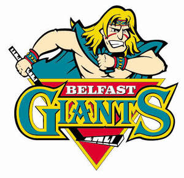

Trade Mark Journal No.2026/010 6 March 2026
UK00004344814 24 February 2026 (9,16,18,25,28,35,37,41)

- Class 9
- Helmets for use in sports; Sports helmets; Sports training simulators.
- Class 16
- Paper and cardboard; printed matter; bookbinding material; photographs; stationery and office requisites, instructional and teaching materials. ; Educational equipment.
- Class 18
- Sports bags; Bags for sports; Holdalls for sports clothing; Bags for sports clothing.
- Class 25
- Clothing, footwear, headwear; Clothing for sports; Sports clothing; Footwear for sports; Sports footwear; Sports jerseys and breeches for sports; Sports jackets; Clothes for sports; Sports vests; Sports clothing [other than golf gloves]; Sports garments; Sports shoes; Sports jerseys; Articles of sports clothing; Boots for sports; Jackets being sports clothing; Sports shirts; Hockey shoes.
- Class 28
- Games AND toys; video game apparatus; gymnastic and sporting articles; decorations for Christmas trees; Sports equipment; Sporting articles and equipment; Sports training apparatus; Bags specially adapted for sports equipment; Gloves for sports; Nets for sports; Sports games.
- Class 35
- Retail services in relation to sporting equipment.
- Class 37
- Repair of sports equipment.
- Class 41
- Education; providing of training; entertainment; sporting and cultural activities; Rental of sports equipment; Hire of equipment for sports; Rental of sports equipment and facilities; Rental of sports or exercise equipment; Rental services relating to equipment and facilities for education, entertainment, sports and culture; Operation of sports facilities; Sports training; Provision of ice sports facilities; Sports and fitness; Sports and fitness services; Sports activities; Provision of sports facilities; Provision of facilities for sports; Training of sports players; Providing facilities for sports tournaments; Providing sports training facilities; Providing facilities for sports recreation; Provision of facilities for winter sports; Sports entertainment services; Organising of sports and sports events; Instruction in sports; Sports instruction services; Hire of equipment for games.
silverstream enterprises limited